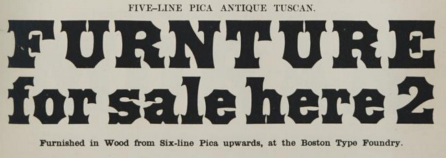
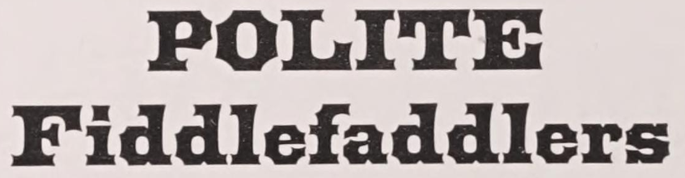
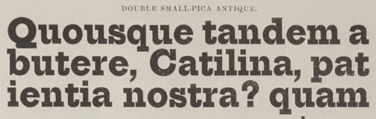

Colophon
This website was designed and coded by me from the ground up. But it also makes use of some excellent work by other people.
Graphics
The main navigation backgrounds are slightly edited versions of pieces from Mackellar, Smiths, and Jordan's Combination Border Series 96.1 I did a little editing to remove non-border content as well as color correcting and blending to make the scroll ends on the navigation look good in this context. Otherwise they are exactly as they appear in MSJ.
To the best of my knowledge, backgrounds and all other samples are screenshotted from digital versions of books that are in the public domain because they were published before 1928 (US) or their authors died prior to 1952 (UK).2
Typefaces
- Arbutus by Karolina Lach, inspired by faces like
 (Boston 1856) and
 (MSJ 1876) - Arbutus Slab by Karolina Lach, inspired by 19th century antique faces
- Hepta Slab (shown here at 800 weight) by Mike LaGattuta, directly based on Bruce faces similar to this 1848 antique
 - 5th Grade Cursive by Lee Batchelor, a modern typeface reminiscent of 19th century script faces
- Computer Modern Sans Serif by Donald E. Knuth, a modern typeface whose serif form was based on 19th century didones
Sources
- MacKellar, Smiths & Jordan Co, Specimens of Printing Types: Ornaments, Borders, Corners, Rules, Emblems, Initials, &c., (Philadelphia: The Company, 1892), 449.
- The Public Domain Review, “What Will Enter the Public Domain in 2023?”